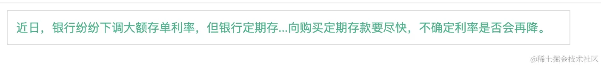

2024-06-20 20:06:07 · YinHao
html 代码
<div class="title" id="test">
近日，银行纷纷下调大额存单利率，但银行定期存款仍被疯抢。银行理财经理表示：有意向购买定期存款要尽快，不确定利率是否会再降。
</div>
css 代码: 设置文本不换行，同时设置overflow:hidden让文本溢出盒子隐藏
.title {
width: 640px;
height: 40px;
line-height: 40px;
font-size: 14px;
color: #00b388;
border: 1px solid #ddd;
overflow: hidden;
/* text-overflow: ellipsis; */
white-space: nowrap;
/* box-sizing: border-box; */
padding: 0 10px;
}
javascript 代码：
获取标题盒子的宽度时要注意,如果在 css 样式代码中设置了 padding, 就需要获取标题盒子的左右 padding 值。 通过getComputedStyle属性获取到所有的 css 样式属性对应的值, 由于获取的 padding 值都是带具体像素单位的，比如: px，可以用 parseInt 特殊处理一下。
获取盒子的宽度的代码，我当时开发时是用 canvas 计算的，但计算的效果不太理想，后来逛社区，发现了嘉琪coder大佬分享的文章，我这里就直接把代码搬过来用吧, 想了解的掘友可以直接滑到文章末尾查看。
判断文本内容是否超出标题盒子
// 标题盒子dom
const dom = document.getElementById("test");
// 获取dom元素的padding值
function getPadding(el) {
const domCss = window.getComputedStyle(el, null);
const pl = Number.parseInt(domCss.paddingLeft, 10) || 0;
const pr = Number.parseInt(domCss.paddingRight, 10) || 0;
console.log("padding-left:", pl, "padding-right:", pr);
return {
left: pl,
right: pr,
};
}
// 检测dom元素的宽度，
function checkLength(dom) {
// 创建一个 Range 对象
const range = document.createRange();
// 设置选中文本的起始和结束位置
range.setStart(dom, 0), range.setEnd(dom, dom.childNodes.length);
// 获取元素在文档中的位置和大小信息,这里直接获取的元素的宽度
let rangeWidth = range.getBoundingClientRect().width;
// 获取的宽度一般都会有多位小数点，判断如果小于0.001的就直接舍掉
const offsetWidth = rangeWidth - Math.floor(rangeWidth);
if (offsetWidth < 0.001) {
rangeWidth = Math.floor(rangeWidth);
}
// 获取元素padding值
const { left, right } = getPadding(dom);
const paddingWidth = left + right;
// status：文本内容是否超出标题盒子；
// width: 标题盒子真实能够容纳文本内容的宽度
return {
status: paddingWidth + rangeWidth > dom.clientWidth,
width: dom.clientWidth - paddingWidth,
};
}
通过 charCodeAt 返回指定位置的字符的Unicode编码, 返回的值对应 ASCII 码表对应的值，0-127 包含了常用的英文、数字、符号等，这些都是占一个字节长度的字符，而大于 127 的为占两个字节长度的字符。
截取和计算文本长度
// 计算文本长度，当长度之和大于等于dom元素的宽度后，返回当前文字所在的索引，截取时会用到。
function calcTextLength(text, width) {
let realLength = 0;
let index = 0;
for (let i = 0; i < text.length; i++) {
charCode = text.charCodeAt(i);
if (charCode >= 0 && charCode <= 128) {
realLength += 1;
} else {
realLength += 2 * 14; // 14是字体大小
}
// 判断长度，为true时终止循环，记录索引并返回
if (realLength >= width) {
index = i;
break;
}
}
return index;
}
// 设置文本内容
function setTextContent(text) {
const { status, width } = checkLength(dom);
let str = "";
if (status) {
// 翻转文本
let reverseStr = text.split("").reverse().join("");
// 计算左右两边文本要截取的字符索引
const leftTextIndex = calcTextLength(text, width);
const rightTextIndex = calcTextLength(reverseStr, width);
// 将右侧字符先截取，后翻转
reverseStr = reverseStr.substring(0, rightTextIndex);
reverseStr = reverseStr.split("").reverse().join("");
// 字符拼接
str = `${text.substring(0, leftTextIndex)}...${reverseStr}`;
} else {
str = text;
}
dom.innerHTML = str;
}
最终实现的效果如下：
上面就是此功能的所有代码了，如果想要在本地试验的话，可以在本地新建一个 html 文件，复制上面代码就可以了。
下面记录下从社区内学到的相关知识：
通过document.createRange和document.getBoundingClientRect()这两个方法实现的。也就是我上面代码中实现的checkLength方法。
通过创建一个不会在页面显示出来的 dom 元素，然后把文本内容设置进去，真实的文本长度与标题盒子比较宽度，判断是否被溢出隐藏了。
function getDomDivWidth(dom) {
const elementWidth = dom.clientWidth;
const tempElement = document.createElement("div");
const style = window.getComputedStyle(dom, null);
const { left, right } = getPadding(dom); // 这里我写的有点重复了，可以优化
tempElement.style.cssText = `
position: absolute;
top: -9999px;
left: -9999px;
white-space: nowrap;
padding-left:${style.paddingLeft};
padding-right:${style.paddingRight};
font-size: ${style.fontSize};
font-family: ${style.fontFamily};
font-weight: ${style.fontWeight};
letter-spacing: ${style.letterSpacing};
`;
tempElement.textContent = dom.textContent;
document.body.appendChild(tempElement);
const obj = {
status: tempElement.clientWidth + right + left > elementWidth,
width: elementWidth - left - right,
};
document.body.removeChild(tempElement);
return obj;
}
这种方法是在 UI 框架acro design vue中实现的。外层套一个块级(block)元素，内部是一个行内(inline)元素。给外层元素设置溢出隐藏的样式属性，不对内层元素做处理，这样内层元素的宽度是不变的。因此，通过获取内层元素的宽度和外层元素的宽度作比较，就可以判断出文本是否被溢出隐藏了。
<div class="title" id="test">
<span class="content"
>近日，银行纷纷下调大额存单利率，但银行定期存款仍被疯抢。银行理财经理表示：有意向购买定期存款要尽快，不确定利率是否会再降。</span
>
</div>
// 创建一个block元素来包裹inline元素
const content = document.querySelector(".content");
function getBlockDomWidth(dom) {
const { left, right } = getPadding(dom);
console.log(dom.clientWidth, content.clientWidth);
const obj = {
status: dom.clientWidth < content.clientWidth + left + right,
width: dom.clientWidth - left - right,
};
return obj;
}
通过 Canvas 2D 渲染上下文(context)可以调用 measureText 方法，此方法会返回 TextMetrics 对象，该对象的width属性值就是字符占据的宽度，由此也能获取到文本的真实宽度，此方法有弊端，比如说兼容性，精确度等等。
// 获取文本长度
function getTextWidth(text, font = 14) {
const canvas = document.createElement("canvas");
const context = canvas.getContext("2d");
context.font = font;
const metrics = context.measureText(text);
return metrics.width;
}
这种方式来自评论区的掘友@S_mosar提供的思路。 先来看下效果：
代码如下： css 部分
.con {
font-size: 14px;
color: #666;
width: 600px;
margin: 50px auto;
border-radius: 8px;
padding: 15px;
overflow: hidden;
resize: horizontal;
box-shadow: 20px 20px 60px #bebebe, -20px -20px 60px #ffffff;
}
.wrap {
position: relative;
line-height: 2;
height: 2em;
padding: 0 10px;
overflow: hidden;
background: #fff;
margin: 5px 0;
}
.wrap:nth-child(odd) {
background: #f5f5f5;
}
.title {
display: block;
position: relative;
background: inherit;
text-align: justify;
height: 2em;
overflow: hidden;
top: -4em;
}
.txt {
display: block;
max-height: 4em;
}
.title::before {
content: attr(title);
width: 50%;
float: right;
white-space: nowrap;
overflow: hidden;
text-overflow: ellipsis;
direction: rtl;
}
html 部分
<ul class="con">
<li class="wrap">
<span class="txt">CSS 实现优惠券的技巧 - 2021-03-26</span>
<span class="title" title="CSS 实现优惠券的技巧 - 2021-03-26"
>CSS 实现优惠券的技巧 - 2021-03-26</span
>
</li>
<li class="wrap">
<span class="txt"
>CSS
测试标题，这是一个稍微有点长的标题，超出一行以后才会有title提示，标题是
实现优惠券的技巧 - 2021-03-26</span
>
<span
class="title"
title="CSS 测试标题，这是一个稍微有点长的标题，超出一行以后才会有title提示，标题是 实现优惠券的技巧 - 2021-03-26"
>CSS
测试标题，这是一个稍微有点长的标题，超出一行以后才会有title提示，标题是
实现优惠券的技巧 - 2021-03-26</span
>
</li>
<li class="wrap">
<span class="txt">CSS 拖拽?</span>
<span class="title" title="CSS 拖拽?">CSS 拖拽?</span>
</li>
<li class="wrap">
<span class="txt">CSS 文本超出自动显示title</span>
<span class="title" title="CSS 文本超出自动显示title"
>CSS 文本超出自动显示title</span
>
</li>
</ul>
思路解析：
line-height: 2;、overflow: hidden;、height: 2em;，因此 li 标签的高度是当前元素字体大小的 2 倍，行高也是当前字体大小的 2 倍，同时内容若溢出则隐藏。.txt的标签用来展示不需要省略号时的文本，类名为.title用来展示需要省略号时的文本，具体是如何实现的请看第五步。.title设置伪类before，将伪类宽度设置为 50%，搭配浮动float: right;，使得伪类文本内容靠右，这样设置后，.title和伪类就会各占父级宽度的一半了。.title标签设置text-align: justify;，用来将文本内容和伪类的内容两端对齐。before设置文字对齐方式direction: rtl;，将伪类内的文本从右向左流动，即right to left，再设置溢出省略的 css 样式就可以了。.title标签设置了top: -4em,.txt标签设置max-height: 4em;这样保证.title永远都在.txt上面，当内容足够长，.txt文本内容会换行，导致高度从默认 2em 变为 4em，而.title位置是-4em，此时正好将.txt覆盖掉，此时显示的就是.title标签的内容了。知识点：text-align: justify;
需要注意的是，
text-align: justify;主要用于多行文本。对于单行文本，这个值的效果与text-align: left;相同，因为单行文本无法两端对齐。
通过 charCodeAt 获取指定位置字符的Unicode编码，返回的值对应 ASCII 码表对应的值，0-127 包含了常用的英文、数字、符号等，这些都是占一个字节长度的字符，而大于 127 的为占两个字节长度的字符。
function calcTextLength(text) {
let realLength = 0;
for (let i = 0; i < text.length; i++) {
charCode = text.charCodeAt(i);
if (charCode >= 0 && charCode <= 128) {
realLength += 1;
} else {
realLength += 2;
}
}
return realLength;
}
function getTextWidth(text) {
return text.replace(/[^\x00-\xff]/g, "aa").length;
}